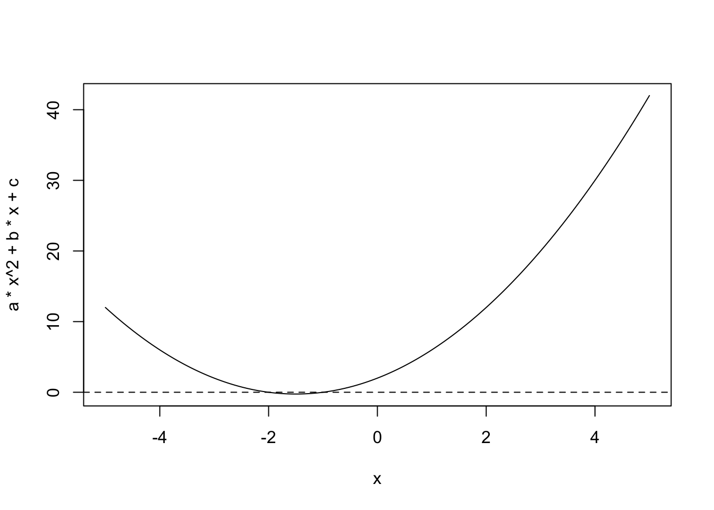

[1] "The solutions are -1 and -2."BST 260 HW 0
Exercises
- Write a Quarto document that defines variables \(a=1, b=3, c=2\) and print out the solutions to \(f(x) = ax^2+bx+c=0\). Do not report complex solutions, only real numbers.
These solutions to \(f(x) = ax^2+bx+c=0\) are based on input values of \(a=1, b=3\), and \(c=2\).
- Include a graph of \(f(x)\) versus \(x\) for \(x \in (-5,5)\).

The graph displays the solution(s) to the equation (if any) as the point(s) where the curve crosses the line at \(y=0\).